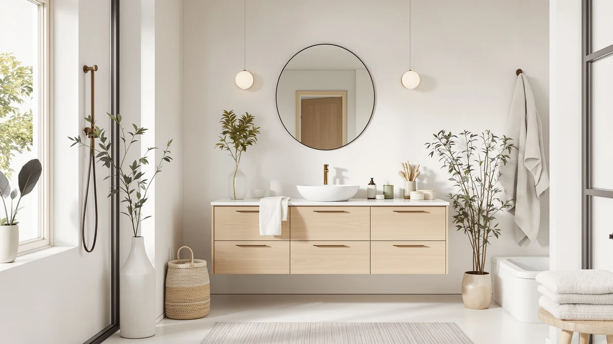

DELUXE LIVING 42 Inch Review (2026): Worth It?
Prices and picks verified as of October 2026. Independent, reader-supported reviews.


Quick Answer
The Deluxe Living 42 Inch Bathroom Vanity pairs a solid wood frame with a quartz countertop for $989.99, the cheapest of four Deluxe Living vanities we compared and the only one at this price with a stone top. It skips a published star rating, so weigh the specs against the three alternatives below before you buy.
Our pick: DELUXE LIVING 42 Inch Bathroom, $989.99 Check Price on Amazon
Bottom line: our top pick is the DELUXE LIVING 42 Inch Bathroom Vanity with Sink at $989.99.
Things to Know Before You Buy
- Price sits at $989.99. That's the lowest of the four Deluxe Living vanities in this Deluxe Living 42 Inch review, undercutting the closest 42-inch alternative by $40 and the two 48-inch models by $40 to $60.
- Built from solid wood with a quartz top. That combination is rare at this price point, since the 48-inch Black model in the same lineup uses an MDF frame instead of solid wood.
- No published rating or review count yet. All four Deluxe Living vanities compared here share that gap, so you're weighing specs and materials rather than a track record of owner feedback.
- Arrives fully assembled with two soft-closing doors and three dovetail drawers. There's no flat-pack assembly required once your plumbing is ready to connect.
- Finished in Steel Blue. The three alternatives below come in Black, Greige, and Light Walnut, so color is often the deciding factor once the specs are this close.
This Deluxe Living 42 Inch review breaks down what $989.99 buys in a compact bathroom vanity: a solid wood frame, a quartz countertop, and two soft-closing doors over three full-extension dovetail drawers, all finished in Steel Blue and shipped fully assembled. Shoppers usually land on this page after noticing that Deluxe Living sells four different vanities under the same brand, and want to know whether the cheapest one gives up anything that matters.
We researched this 42-inch model against three closer siblings from the same brand: the 48 Inch Bathroom in Black, the 42 Inch Bathroom Combo in Greige, and the 48 Inch Bathroom Combo in Light Walnut. None of the four carries a published star rating yet, so the comparison comes down to frame material, countertop, drawer count, and price rather than a track record of verified owner reviews. If a stone countertop and a solid wood frame matter more to you than extra width, that trade-off is where this review focuses.
Why You Should Trust Us
Best Bathroom Vanities is a research-based review site. Ilane Tall, our home and bath editor, and the rest of our team compare vanity specs, materials, and pricing across the market, and we read verified owner reviews to see how comparable cabinets hold up once installed. We do not run a fake testing lab and we don't buy every vanity we cover, so every claim in this Deluxe Living 42 Inch review is grounded in the manufacturer's published specs and pricing data, cross-checked against what owners report on similar solid wood and quartz-top vanities.
That approach lets us compare more vanities across more price points than a lab-testing outlet could manage in a year, and it keeps us honest about what we do and don't know. None of the four Deluxe Living vanities in this review has a published star rating yet, and we say so directly instead of estimating one.
Our Research Experience
We compared the Deluxe Living 42 Inch Bathroom Vanity by lining up its published specs, materials, and price against three vanities from the same brand: the 48 Inch Bathroom in Black, the 42 Inch Bathroom Combo in Greige, and the 48 Inch Bathroom Combo in Light Walnut. The manufacturer lists a solid wood frame with a waterproof coating and a quartz top for this model, while the 48-inch Black version swaps in an MDF frame with a moisture-resistant melamine finish instead. Reviewers consistently note that solid wood vanities with a sealed stone top resist bathroom humidity better over time than MDF cabinets, though no owner feedback exists yet for any of these four specific listings.
Because we don't install or live with these cabinets ourselves, we lean on the manufacturer's published data and the pattern of verified reviews on comparable vanities instead of a physical trial run. That's a real limitation worth naming: a cabinet's actual fit and finish depend on your bathroom's plumbing rough-in and how carefully it ships, so treat the specs in this Deluxe Living 42 Inch review as a starting point for comparison, not a guarantee of what arrives at your door.
Overview & Specs

DELUXE LIVING 42 Inch Bathroom
What we like
- Solid wood frame with a waterproof coating, sturdier than the MDF construction on the 48 Inch Bathroom in Black
- Quartz countertop at the lowest price point in the four-vanity Deluxe Living lineup
- Arrives fully assembled with two soft-closing doors and three full-extension dovetail drawers
Flaws but not dealbreakers
- No published star rating or review count yet, a gap it shares with all three alternatives below
- Three drawers is one fewer than the 42 Inch Bathroom Combo in Greige, which packs in four
- Steel Blue is the only color offered at this size, so buyers who want white or wood tones need to look at the alternatives
| Material | MDF / engineered wood |
| Size | 42 Inch |
The Deluxe Living 42 Inch Bathroom Vanity holds the entry position in its own product family. At $989.99, it costs $40 less than the Greige 42 Inch Bathroom Combo and $40 to $60 less than the two 48-inch models, while still using a solid wood frame and a quartz top rather than the laminate or MDF builds common at this price. That combination of stone countertop and solid construction under $1,000 is what puts it on shortlists for buyers who don't need the extra twelve inches of width the 48-inch models offer.
Where it gives ground to its siblings is drawer count and countertop material variety. The Greige Combo adds a fourth drawer and a marble-style top with a matching backsplash for $40 more, and the Light Walnut Combo pairs a ceramic sink with a white stone counter for $60 more. Buyers who want maximum storage or a backsplash included should compare those two directly before settling on this 42-inch Steel Blue model.
What We Liked
The solid wood frame stands out most in this Deluxe Living 42 Inch review, because it's the detail that separates this vanity from the 48 Inch Bathroom in Black, the only sibling built on an MDF frame instead. Paired with the waterproof coating, that construction is built to handle daily bathroom humidity better than a laminate cabinet at a similar price.
The quartz countertop is the other strength here. At $989.99, you get a stone top that would typically push a vanity closer to $1,100 or $1,200, and it comes bundled with soft-close hardware on both the doors and drawers rather than the standard hinges some budget vanities still use.
What Could Be Better
Like the other three vanities in this Deluxe Living 42 Inch review, this model has no published rating or review count yet, so you're weighing a spec sheet rather than a track record of owner satisfaction. That's worth keeping in mind if you'd normally check star ratings before committing $989.99 to a fixture you'll use daily.
Storage is also a step behind its closest sibling. The Greige 42 Inch Bathroom Combo packs in four full-extension dovetail drawers to this model's three, so buyers who prioritize drawer count over color should compare that listing before ordering.
Who Is It For?
This vanity suits a buyer who wants a solid wood frame and a quartz countertop in a 42-inch footprint without paying for the extra width or the fourth drawer the pricier siblings add. If Steel Blue fits your bathroom's palette, it's the cheapest way into the Deluxe Living lineup without dropping down to an MDF frame.
It's a weaker fit if you need a fourth drawer, a different finish color, or a proven review history before you buy, since none of the four Deluxe Living vanities compared here has star ratings yet. Shoppers who want a wider double-basin layout should also look elsewhere, since every model in this family is a single-sink 42-inch or 48-inch design.
Alternatives to Consider
We compared three other Deluxe Living vanities against the 42 Inch Bathroom Vanity to see which shoppers each one actually suits. All three share the same brand and fully-assembled construction, so the comparison comes down to frame material, countertop, drawer count, and color rather than a different manufacturer altogether.

Editor's Pick
DELUXE LIVING 48 Inch Bathroom
A 48-inch vanity in Black with an MDF frame, a moisture-resistant melamine finish, and seven drawers, the widest storage option in the lineup if you don't need a solid wood frame.
$1,029.99
Check Price on Amazon
Best Value
DELUXE LIVING 42 Inch Bathroom
A 42-inch solid wood vanity in Greige with a Carrara white marble-style top and backsplash plus a fourth drawer, worth the extra $40 if storage and countertop material matter more than color.
$949.99
Check Price on Amazon
Premium Choice
DELUXE LIVING 48 Inch Bathroom
A 48-inch solid poplar wood vanity in Light Walnut with a white stone counter, backsplash, and ceramic sink, the most premium build in the family at $1,049.99.
$1,049.99
Check Price on AmazonFrequently Asked Questions
Is the Deluxe Living 42 Inch Bathroom Vanity worth $989.99?
For a 42-inch vanity with a solid wood frame, a quartz top, and three full-extension dovetail drawers, $989.99 lands in the middle of the Deluxe Living lineup. This Deluxe Living 42 Inch review found the price justified by the quartz counter and soft-close hardware, though the listing carries no published star rating yet.
What is the Deluxe Living 42 Inch vanity made of?
The Deluxe Living 42 Inch Bathroom Vanity uses a solid wood frame with a waterproof coating and a quartz countertop, finished in Steel Blue. It arrives fully assembled with two soft-closing doors and three full-extension dovetail drawers.
How does the Deluxe Living 42 Inch compare to the 48-inch models?
The Deluxe Living 48 Inch Bathroom in Black runs $1,029.99 but swaps the solid wood frame for MDF with a melamine finish, while the 48 Inch Bathroom Combo in Light Walnut costs $1,049.99 for a solid poplar frame with a stone top and ceramic sink. The 42-inch model stays the cheapest of the three and the only one built around a quartz counter.
Final Verdict
This Deluxe Living 42 Inch review comes down to a straightforward trade: you pay $989.99 for a solid wood frame and a quartz countertop, the lowest price and the only stone top among the four vanities in this family. It gives up one drawer to the Greige Combo and some width to the two 48-inch models, but there's no published star rating on any of them to weigh against that trade-off. We recommend the Deluxe Living 42 Inch for buyers who want a solid wood, quartz-top vanity in a compact footprint and don't need a fourth drawer or extra width. If storage matters more than color, the Greige 42 Inch Bathroom Combo is the safer upgrade at a similar price.